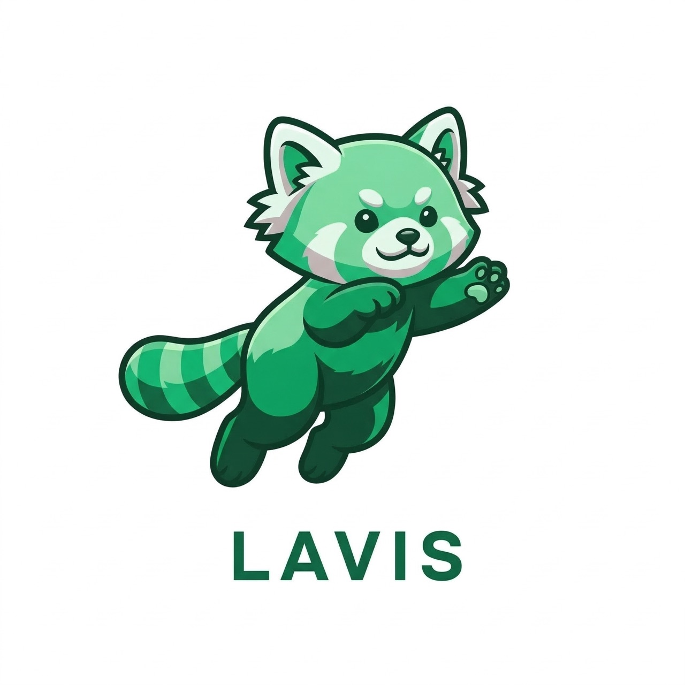

Software Engineer · AI Agents & Backend Systems
Longchang Liu
I build reliable AI workflows, backend services, and developer tools, with an interest in the systems beneath them.
Primary focus
AI Agent Engineering
Foundation
Java & Backend Systems
Working style
Clarity, resilience, iteration
01 / Selected work
Project record
One project, end to end.
A system-level experiment in visual perception, action, reflection, and context management.

Watch demoLavis: macOS Multimodal AI Agent
A desktop agent that sees the screen, controls mouse and keyboard, and supports voice interaction. The execution loop combines visual perception, autonomous actions, reflection, and context compression.
- Spring Boot
- React
- Electron
- TypeScript
- Java
02 / Writing
Browse all records
Notes from the work.
Selected writing on agent infrastructure, operating systems, and production engineering.
Prompt Caching: Architecting Low-Latency AI Agents
A practical look at latency, inference cost, and cache-aware agent architecture.
OS Internals: The Mechanics of Page Tables
Address translation, hardware isolation, and process address spaces in xv6.
AI Paper Cuts: mHC
A concise reading of recent research, focused on core contributions and engineering implications.